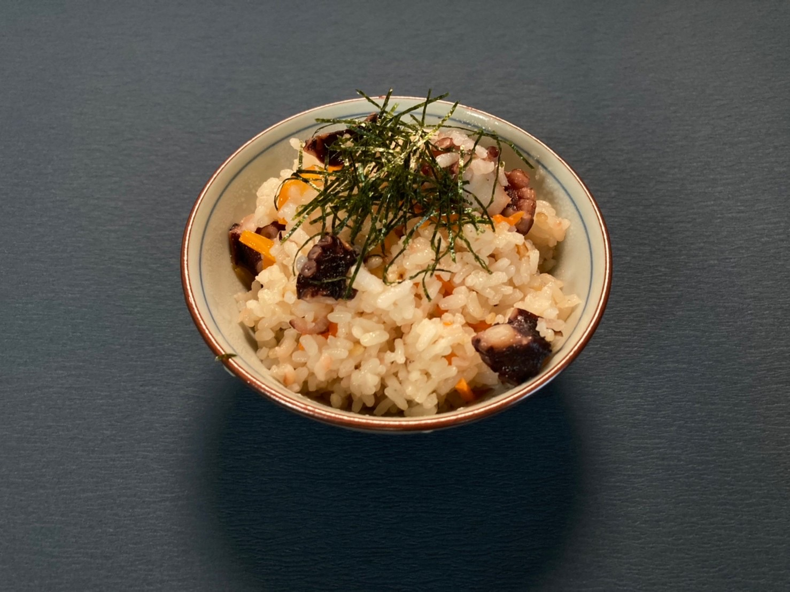
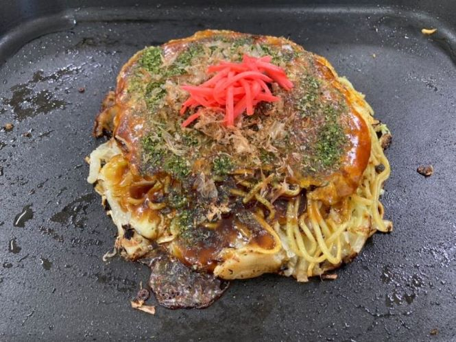
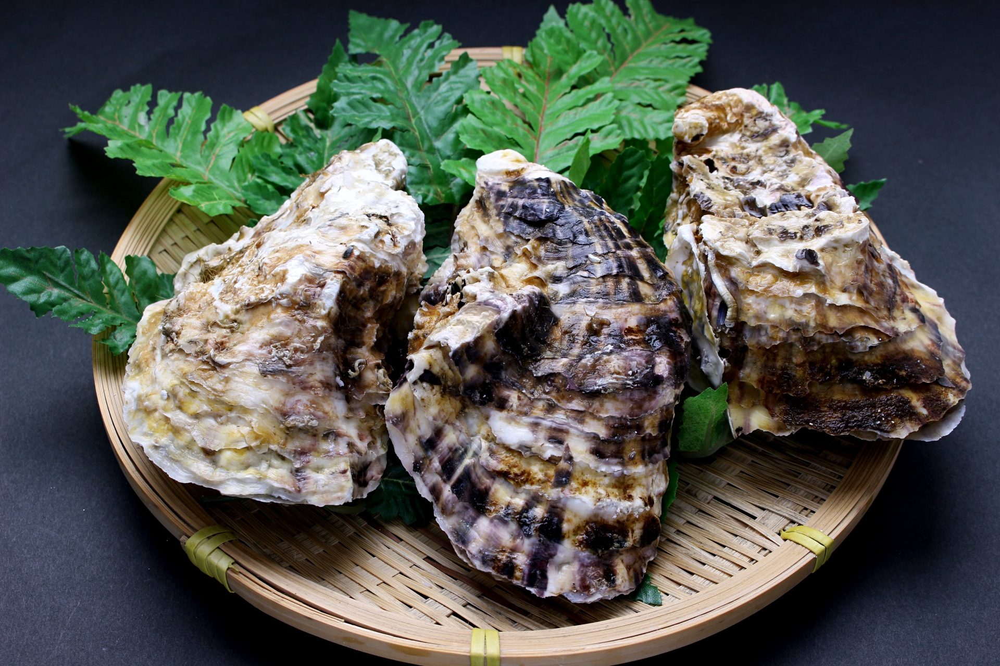
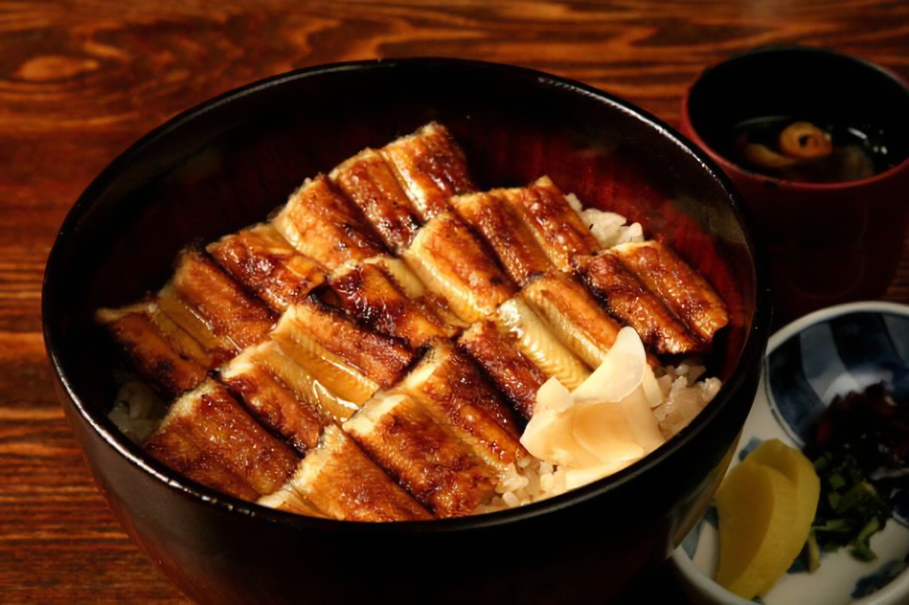

グルメ
広島県には、様々なグルメがあります。
このページでは、「お好み焼き」「牡蠣「郷土料理」の三種類のグルメを紹介します。


お好み焼き
お好み焼きには関西風と広島風の二種類が存在しますが、広島風には関西風とはまた違う見た目や美味しさ、具材や味などがあります。
また、広島風のお好み焼きの作り方が学べる施設もあるので、ぜひ行ってみてください。
牡蠣
牡蠣は、栄養(亜鉛やタウリン、各種ビタミン)が多く、免疫量アップや健康増進に効果的です。
それに、10月~4月までの長い間食べることができ、とてもおいしいです。


郷土料理
広島県の郷土料理は、ご飯や煮物、刺身などいろいろな種類があります。
例えば、あなご飯やワニ(サメ)の刺身、広島菜を使った料理などがあります。
出典: 農林水産省Webサイト